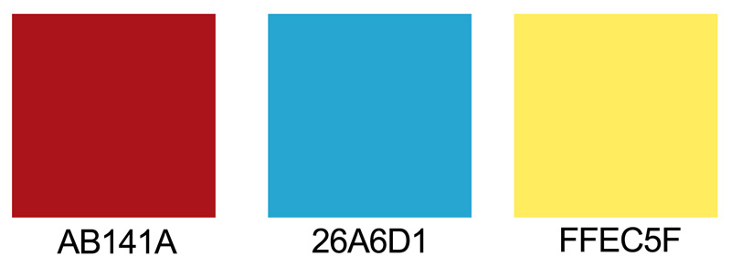

Color Scheme
The colors for the site will consist of these colors and hues of these colors. It is designed to match the logo and bring continuity to the site. It will have the same colors through the site.
Colors in Use
- Header and Footer Background: #AB141A
- Header and Footer Text: White
- Navigation Background: #FFF9CC
- Navigation Text Link and Visited: #AB141A
- Navigation Background Active: #3AACC6
- Navigation Background Hover: #82CEDB
- Navigation Text Hover: White
- Heading Text: Black
- Paragraph Text: Black